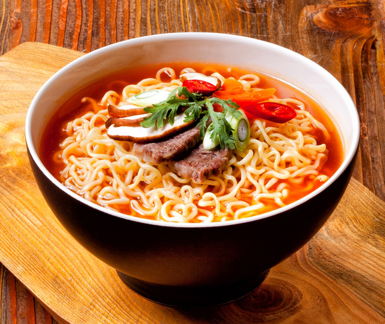

Simple Korean Ramyun

Ingridients
For the quick pickled cucumber
- 1 small cucumber, halved lengthwise and sliced into ribbons
- ½ tablespoon sugar
- ½ tablespoon kosher salt
- Juice of 1/2 lime
- ½ tablespoon miso paste
- 1 teaspoon dried red pepper flakes
- 1 tablespoon black sesame seeds
For the ramen
- ½ tablespoon coconut oil
- 1 red onion, coarsely chopped
- 2 carrots, sliced diagonally
- 2 tablespoons gochujang (Korean chili paste)
- 1 tablespoon miso paste
- 1 tablespoon smooth peanut butter
- ½ tablespoon soy sauce, plus extra if needed
- ½ tablespoon maple syrup
- 6 ½ cups water
- 6 x 4 inch piece of kombu seaweed
- 1 handful green beans, halved
- 1/2 head of cauliflower, broken into florets
- 3 ½ ounces firm tofu, cut into cubes
- 9 ounces ramen noodles, dry or fresh
- Kosher salt
- 2 scallions, sliced
- Torn cilantro leaves
- 1 nori seaweed sheet, shredded
Instructions
- Make the pickled cucumber: Add the cucumber pieces to a shallow bowl and sprinkle over the sugar and salt.
Mix the lime juice with the miso, then pour it over the cucumbers. Toss to combine and set aside until needed.
- Heat the coconut oil in a large heavy saucepan over medium heat.
Add the onion and carrots, season with a little salt, and saute for 1 to 2 minutes until slightly softened.
- Add the gochujang, miso, peanut butter, soy sauce, and maple syrup to the pan,
pour over the measured water, and stir in the kombu.
- Bring to a boil, then reduce the heat to a simmer and cook for 5 to 7 minutes.
Remove the kombu and finely slice, then add it back to the pan along with the green beans
and cauliflower and cook for another 10 minutes. Add the tofu and cook 5 minutes to warm through.
Season with salt until the flavor pops, adding a splash of soy sauce if needed.
- Meanwhile, bring a separate pot of water to a boil
and cook the noodles according to package instructions.
- Stir the red pepper flakes and sesame seeds through the quick pickled cucumber;
then top the cucumber on the bowls along with the scallions, cilantro, and nori. Serve immediately.
Return to the main page